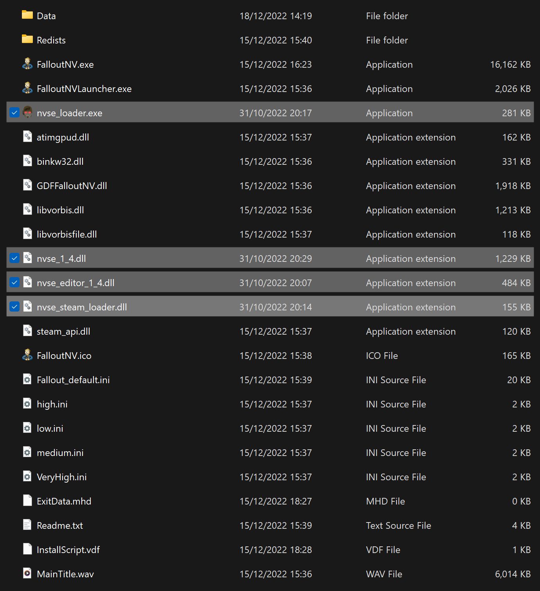

Utilities
Make sure the Viva New Vegas profile is active before proceeding.
Creating a Separator in MO2
- Right-click the empty space in the left pane of MO2 and select Create Separator.
- Name the separator Utilities.
xNVSE
Installation instructions:
- Main Files - New Vegas Script Extender (NVSE) (Manual Download)
- From the downloaded archive, extract everything to the game's Root folder
If you do not know what the Root folder is, read the Key Terminology section from the Initial Setup page.
Despite its name, nvse_steam_loader.dll is still needed with the GOG version of the game.
An updated version of the original NVSE, which extends the scripting capabilities of the game.
After proper install, your Root Folder should look like this:

BSA Decompressor
Installation instructions:
IMPORTANT: Make sure you follow these instructions precisely or else you will end up with missing meshes in your game.
- Download the Main Files - FNV BSA Decompressor and extract the contents of the archive anywhere outside of the default Windows folders
- From the extracted archive, run FNV BSA Decompressor.exe
- Under the Fallout: New Vegas header, click Browse and choose the location of your game's Root folder
- Click Decompress, wait for the process the finish, then exit the program once finished
- Click the
 button at the top of MO2 and select INI Editor
button at the top of MO2 and select INI Editor
- Select the fallout.ini tab if its not already selected
- Press Ctrl + F and search for SArchiveList=
- Replace the existing line with the following:
IMPORTANT: Make sure the new section is one line when pasted.
- Save and exit
Repackages the BSAs without zlib compression to increase performances and fixes certain sound effects not playing.
Ultimate Edition ESM Fixes
Installation instructions
- Download the Main Files - Ultimate Edition ESM Fixes and extract the contents of the archive anywhere outside of the default Windows folders
- Click the
 button next to the profiles bar and select Open Mods folder
button next to the profiles bar and select Open Mods folder
- Create an empty folder called Fixed ESMs inside of the Mods folder
- From the extracted archive, run Installer.exe
- Under the Fallout: New Vegas header, click Browse and choose the location of your game's Root folder
- Under the ESM Fixes header, click Browse and choose the Fixed ESMs folder you just created
- Click Install, wait for the process the finish, then exit the program once finished
- In Mod Organizer 2, press F5 to refresh the left pane and active the Fixed ESMs option that should appear
Optimizes and fixes thousands of records across the base game and DLC plugins to increase performance and stability.
4GB Patcher
This is required for both Steam & GOG users! The 4GB Patch included with the GOG release is obsolete as it lacks NVSE integration.
Installation instructions:
- Download the Main Files - 4GB Patcher
- From the downloaded archive, extract the .exe file to the game's Root folder
- Right-click on FNVpatch.exe and select Run as administrator
- A command prompt window will open and should say FalloutNV.exe patched!
- Close the command prompt and a file named FalloutNV_backup.exe should appear in the game's Root folder
Makes the game large address aware, meaning it can use 4GB of RAM instead of 2GB.
From now on, you should run the game through the New Vegas option in MO2, rather than the NVSE option. This mod makes the game auto-load NVSE when you run the game through the default executable, which is generally the safer option.
New Vegas Heap Replacer
Installation instructions:
- Download the Main Files - NVHR using the Manual Download button
- From the downloaded archive, extract everything to the game's Root folder
Replaces the game's heap management system with a much faster version, which can lead to large performance gains.
JIP LN NVSE Plugin
Installation instructions:
- Main Files - JIP LN NVSE Plugin
NVSE extension with new functions and many engine bug fixes.
After installing a mod, make sure you check the box next to it in the left pane of MO2 to enable it.
JohnnyGuitar NVSE
Installation instructions:
- Main Files - JohnnyGuitar NVSE
Another NVSE extension similar to JIP LN.
Crash Logger
Installation instructions:
- Main Files - Crash Logger
A DLL that logs raw crash data.
New Vegas Tick Fix
Installation instructions:
Works to fix micro-stuttering, improve performance, and allow playing at higher framerates.
In order for this mod to work properly, make sure you installed the DirectX and VC++ requirements from the Introduction page.
Mod Limit Fix
Installation instructions:
Raises the game's file handles limit and improves performance/load times, even if you are far below it.
kNVSE Animation Plugin
Installation instructions:
Resource for expanding and improving the game's limited animation system.
Console Paste Support
Installation instructions:
- Main Files - Console Paste
Adds Ctrl+V as a hotkey to paste into the in-game console, along with a few other helpful shortcuts.
ShowOff NVSE
Installation instructions:
- Main Files - ShowOff NVSE
- Optional File - ShowOff INI
NVSE plugin adding new functions and engine-level tweaks & bugfixes.
Testing Utilities
- Restart your PC (Otherwise some plugins will print out 0)
- Launch the game using the New Vegas option in MO2 (NOT the NVSE option)
- If you see a black console window appear, it means NVHR is working
- If not, NVHR is installed incorrectly
- Once the game has reached the main menu, hit the
~ key (Above the tab key) to open the console
- You will need to unplug/disconnect any controllers to be able to use the keyboard
- Enter
GetNVSEVersion, and the console should print NVSE version: 6
- If not, xNVSE is installed incorrectly
- Next, enter
GetIsLAA, and the console should print GetIsLAA >> 2
- If it prints
>> 0, then the 4GB Patch was applied incorrectly
- If it prints an error message, then JIP LN NVSE is installed incorrectly
- Next, enter
GetINISetting "bUseThreadedAI:General" and the console should print INISetting bUseThreadedAI:General >> 1
- Next, enter
IsDLLLoaded CobbCrashLogger, and the console should print IsDLLLoaded "CobbCrashLogger.dll" >> 1
- Next, enter
IsDLLLoaded NVTF, and the console should print IsDLLLoaded "nvtf.dll" >> 1
- If not, then NVTF is installed incorrectly
- Next, enter
IsDLLLoaded mlf, and the console should print IsDLLLoaded "mlf.dll" >> 1